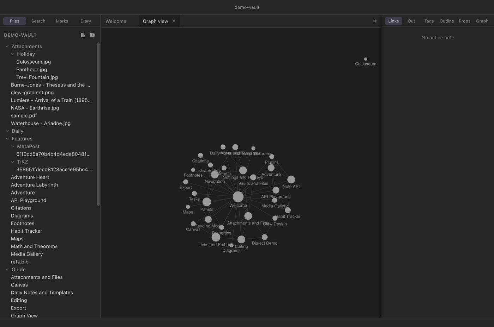

Workspace
Graph view
Every [[wikilink]] you write is an edge in a graph you
never see while writing. The graph view draws it: every note in the
vault as a node, every resolved link as a line between two of them,
laid out by a force simulation that pulls linked notes together and
pushes strangers apart. It is not a diagram you construct — it is a
picture of the structure your writing already has, and it is the
fastest way to see which notes have become hubs and which have
quietly become orphans.
Opening the graph
Press ⌘G, choose Graph View from the Go menu, or run Open graph view from the command palette (⌘P). The graph opens as a tab like any other — it can sit in a split beside the note you are reading — and it is a singleton: if a graph tab already exists in any pane, the command switches to it rather than opening a second.

What you are looking at
The graph is built from the same live index that powers backlinks and the quick switcher, so its rules are exact:
- Nodes are notes — every Markdown file in the vault, including notes nothing links to yet. Attachments, canvases, and tags are not nodes.
- Edges are resolved links. Two notes are connected when either links to the other; a pair gets one edge no matter how many links run between them, in either direction. A link to a note that does not exist yet draws nothing — the graph shows the vault as it is, not as it is promised.
- Size means connectedness. A node grows with the number of distinct notes it is linked with, up to a cap, so the vault's hubs are visible at a glance while a sea of small dots stays readable.
- Labels appear as you zoom. Small graphs are labelled outright; in a large vault, zoom in and the names fade in once there is room for them.
The layout itself is a physics simulation: links act as springs, nodes repel each other, and the whole graph settles into clusters that reflect how your notes actually group. The layout is emergent, not saved — positions are not stored anywhere, and a freshly opened graph settles into its own arrangement.
Interacting with the graph
- Pan and zoom
- Drag the background to pan; scroll to zoom, centred on the cursor.
- Hover
- Hovering a node highlights it and its direct neighbours and dims everything else — a one-gesture answer to “what does this note talk to?”. The label of the hovered note is picked out in the accent colour.
- Click
- Click a node to open the note in the current tab; ⌘-click (Ctrl-click on Windows and Linux) opens it in a new tab. The graph tab stays where it was, so you can bounce between the map and the territory.
- Drag a node
- Drag a node to reposition it; the simulation wakes up and the rest of the graph adjusts around your hand. Released nodes rejoin the simulation — dragging is for untangling and exploring, not for pinning a permanent layout.
References in the graph
The References switch in the graph's corner adds the works
your notes cite: one square node per cited key, labelled Author
Year, joined to every note that cites it — so two notes that never
link to each other but lean on the same book sit near each other. Click a
reference to open its entry in the Refs
library. The switch is remembered (graphReferences).
The local graph
The same component, scoped down, lives in the right sidebar as the Graph tool (see Panels): a local graph of the active note's immediate neighbourhood — the note itself, the notes it links to, and the notes that link to it. The centre note is drawn larger and in the accent colour, and the panel follows along as you switch tabs, so it acts as a continuous “you are here” beside whatever you are reading. For anything wider than one step of neighbourhood, open the full graph.
A live picture of the index
The graph is not a snapshot. It listens to the vault index, and rebuilds moments after the index absorbs any change: a saved edit that adds or removes a wikilink, a new note, a rename, a file changed by another program entirely. Nodes that survive a rebuild keep their positions, so the layout does not reshuffle under you — a new note drops in near its links, a deleted one vanishes, and the rest of the picture holds still. Leave the graph open in a split while writing and you can watch a link you have just typed become an edge when the note auto-saves.
Using the graph: hubs and orphans
Two honest uses stand out, one for each end of the size scale.
Hubs — the large nodes — are the notes your vault has elected as its centres of gravity. They are worth deliberate attention: a hub is a natural candidate for a map-of-content note, a chapter overview, a landing page for a topic. If a hub's contents surprise you, that is the graph telling you a topic has outgrown its note.
Orphans — the isolated dots drifting at the edge, connected to nothing — are notes you wrote and never wove in. Some orphans are fine (a scratch file, a template), but an orphan you expected to be connected is a genuine finding: open it straight from the graph, add the links it deserved, and watch it get pulled into its cluster on the next rebuild.
Limits
The graph is a reading instrument, and a deliberately plain one. Tags, attachments, and canvases do not appear as nodes; unresolved links are not drawn; there is no filtering, colouring by folder, or in-graph search; and the layout cannot be pinned or saved. The local panel shows a neighbourhood of exactly one step. If you want a curated spatial arrangement of notes that persists, that is what the canvas is for — the graph shows you the structure you have, the canvas lets you compose the structure you want.
Reference
| Action | Gesture |
|---|---|
| Open the graph | ⌘G (except on a canvas tab), Go → Graph View, or the command palette. |
| Pan | Drag the background. |
| Zoom | Scroll; zoom centres on the cursor. |
| Highlight a neighbourhood | Hover a node. |
| Open a note | Click its node; ⌘-click for a new tab. |
| Rearrange | Drag a node; the simulation adjusts around it. |
| Local graph | Right sidebar → Graph tool: the active note's one-step neighbourhood. |
See also
- Links and embeds — the wikilinks the edges are made of.
- Panels — the local graph, backlinks, and outgoing links panels.
- Navigation, tabs and splits — keeping the graph open beside your writing.
- Search — the other way to find what the graph shows you.
- The canvas — a persistent, hand-arranged counterpart to the graph.